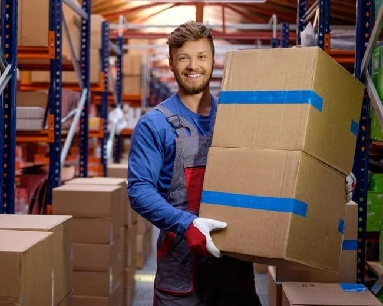

🏋️
НагрузкаУточните, какой вес приходится перемещать и используется ли складская техника.
Склад, магазин, разгрузка товара или подработка. Сравните форматы занятости и выберите вариант, который подходит по району, графику и требованиям.

У грузчиков задачи могут заметно отличаться: где-то это склад, где-то магазин или отдельные разгрузочные работы.
Уточните, какой вес приходится перемещать и используется ли складская техника.
Склад, магазин или распределительный объект — важно заранее понимать адрес.
Полная занятость, смены или подработка зависят от конкретной вакансии.
Сравнивайте не только сумму, но и способ расчёта, периодичность выплат и условия.
Не делим одну тему на множество одинаковых страниц — основные варианты собраны здесь.
Разгрузка поставок, перемещение товара и другие задачи внутри торговой точки. Конкретные обязанности зависят от работодателя.
Работа с поступающим и отгружаемым товаром, перемещение коробок и помощь складской команде.
Отдельные смены или краткосрочная занятость встречаются в некоторых вакансиях. График нужно уточнять заранее.
Одинаковое название вакансии может скрывать совершенно разную нагрузку, график и обязанности.
Работа грузчиком востребована в магазинах, на складах, в логистических объектах и других местах, где необходимо принимать, перемещать или разгружать товар. На РаботаНСК мы собираем информацию по Новосибирску и помогаем сравнивать варианты по графику, району и требованиям.
При выборе вакансии важно заранее выяснить фактические обязанности. В одном месте грузчик может преимущественно работать с поставками в магазин, а в другом — выполнять складские задачи в течение всей смены.
В некоторых предложениях опыт может не требоваться. Однако это зависит от работодателя и характера работы, поэтому точные требования всегда нужно проверять в конкретной вакансии.
Такие запросы встречаются часто, но мы не будем обещать ежедневные выплаты для всех вакансий. Если периодичность оплаты для вас критична, её нужно отдельно уточнять перед выходом на работу.
Подработка может подойти тем, кому нужны отдельные смены или возможность совмещать занятость с другой работой или учёбой. Доступность таких вариантов зависит от текущих вакансий.
Эти страницы появятся дальше по мере сборки сайта.
Коротко о том, что обычно интересует перед откликом.
В некоторых вакансиях — да. Требования отличаются, поэтому отсутствие обязательного опыта нужно подтверждать по конкретному предложению.
Такие варианты встречаются, но график и доступность отдельных смен зависят от работодателя и текущей потребности.
Да, на рынке такие предложения могут встречаться, однако РаботаНСК не гарантирует ежедневные выплаты по каждой вакансии. Периодичность необходимо уточнять заранее.
Это зависит от места работы. Перед откликом стоит уточнить характер товара, максимальный вес и наличие средств механизации.
Нет. РаботаНСК — независимый сервис подбора и сравнения вакансий. Окончательные условия определяет конкретный работодатель.
Укажите в анкете желаемый район, график и направление. Пока форма находится на этапе технической подготовки и реальные заявки не отправляются.